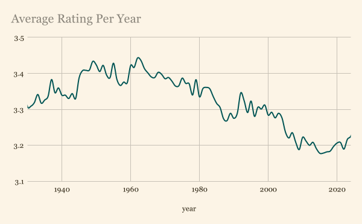
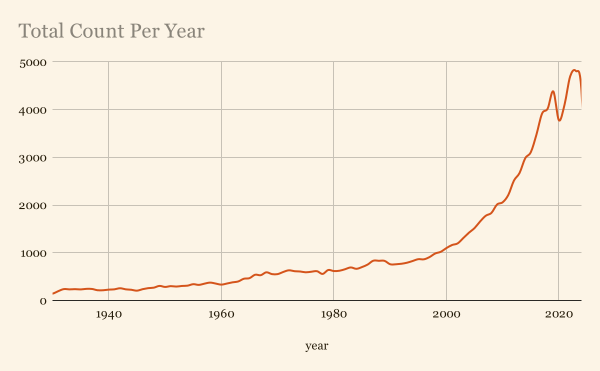
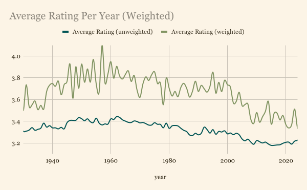
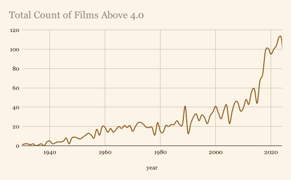
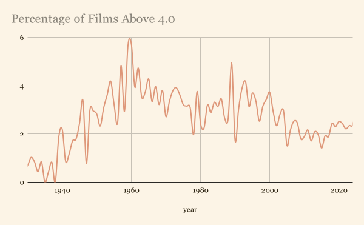

First, we need a data source. In general, we would like to analyze the sentiment of the people, rather than of the critics. This is why I chose to use data from the film discussion and reviewing site, Letterboxd. Letterboxd has a broad range of users; ranging from the faux-academic, to the common film-buff. This will make it easy to capture popular film discourse through both the lens of so-called objectivity, and openly emotional takes.
Letterboxd, due to technical constraints, does not give its data freely. Therefore, the data we will be using will have been from a scrape of the site conducted in mid-2025. This scrape included over 800,000 films on the site, 100,000 of which are popular enough to contain usable data. To reduce noise and incompleteness, we will also be narrowing our gaze to films released from 1930 to 2024.
I wrote a program that takes our data, cleans it, and then outputs something we can use. After a few weeks, the results are in.

Unsurprisingly, the films released from 1945 to 1980 are far more highly-rated. There is even a noticeable decline in average ratings from the year 1960-onward, corresponding with the end of the golden age of Hollywood. This suggests that the sentiment that “they don’t make good movies any more” was a commonly-held belief far before the post-modern era.
However, this is only a simple-average. More films are released every year, and the amount is accelerating. In turn, more “bad” films are released every year, meaning that the negative trend may be due to the sheer volume of films (good and bad) that are released every year.

We can see that the negative trend in our data conveniently correlates with the volume of our data. To account for this, we will have to weight each film by how popular they are. This in itself will be a challenge.
Letterboxd doesn’t have what you might call a “popularity score”. There is a number showing how many people have logged a film, however our data source doesn’t include this metric. What it does include is a collection of the most popular reviews of each film, generally 10 or fewer. It also includes the number of likes for each review. So to create my own popularity score, I simply averaged the number of likes of each comment on each film. More popular films should have a higher value, and less popular films should have a lower value. Because we are already sorting by year, we can account for the fact that older films are less-often reviewed.

We can now see that the decline in ratings since 1960 is not a fluke. We can also see that the difference in ratings between a film from the 1950s and a film from the 1990s is mostly explainable when we consider the now extremely pronounced 2000s trend. What previously looked like a continuation in the post-golden-age down-turn, is now a steep cliff.
This is the clearest evidence that “they don’t make good movies anymore” is the majority stance. Is this stance, however, a true reflection of the quality of modern films, or is it simply a by-product of nostalgia?
Obviously this is a question with an unfalsifiable answer. We have been reading the previous trends as prescriptive rather than descriptive. That is to say, my analysis was predicated on the data being people’s reaction to film, rather than the actual artistic merit of the films themselves. A descriptive analysis of the data would be exactly counter to my argument, and it would not be impossible to make the case that it is the only correct reading of the data.
Both art and art criticism are entirely subjective, so the only objective trends we can pull from are people's self-proported feelings. The statement “X movie is better than Y movie” is meaningless. The statement “I believe X movie is better than Y movie” is not meaningless. The way one decides if a film is “good” or “bad” is a combination of how the community at large feels about it, and how you feel about it as an individual. This is why, I believe, the only correct way to view the data is prescriptively.
If the only objective data we can pull from is based on emotion (which itself is subjective), and that data shows that films have only decreased in quality, how can I claim that this is a misconception?
The statistics we have been discussing prove that there is a real negative outlook on the modern film industry, and it's not just from a vocal minority. However, to determine if the statement “they don’t make good movies anymore” is truthful, we need to focus our gaze on “great movies”. Our definition of what a “great” film will be very simple, and slightly arbitrary. Anything with an average rating of 4.0 or higher is a “great” film.

While the total number of films that are rated 4.0 and over is a small portion of our data set (roughly 2.6%), the majority were released after 2000. This shows that not only do they still make “great movies”, but the amount is accelerating. Before we get ahead of ourselves, lets adjust it for the total number of films released each year.

Obviously, if the total amount of films released each year is accelerating, so should the amount of great films. However, the difference between the 2000-2020s and the 1960s-2000s is not extremely large. On top of that, the difference between each year is measured in 10s of films (less than 0.01% in the chart above), meaning the differences are basically statistically irrelevant.
Generative AI was not used at any point in the creation of this website, the content of this website, or the code used to analyze the data. Everything was done by hand.
This site was tested on Chrome and Firefox.
Dataset: pkchwy/letterboxd-all-movie-data
Letterboxd: letterboxd.com
Bureau of Economic Activity Study: WP2013-7
Data-Analysis Code: icd-t/letterboxd-analyzer
Website Code: icd-t/icd-t.github.io